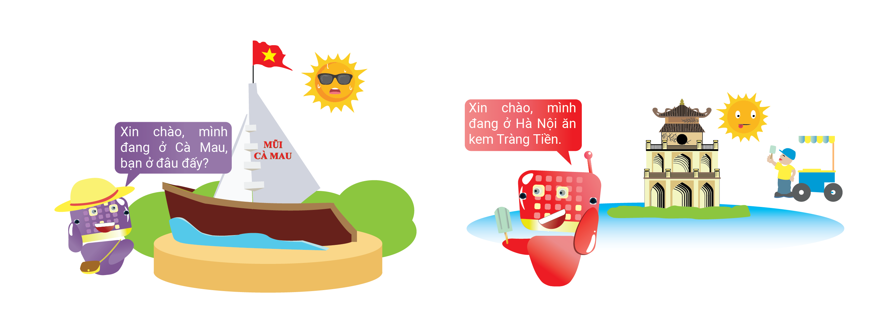
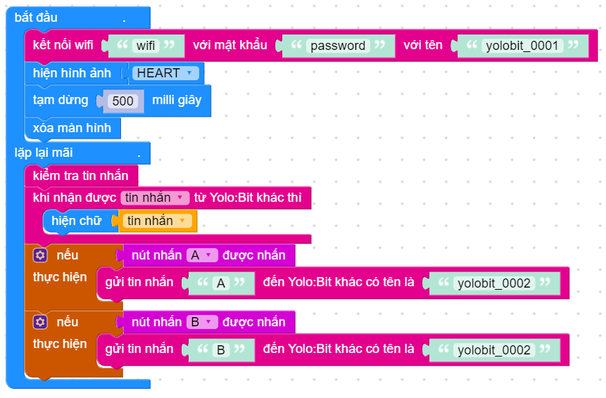
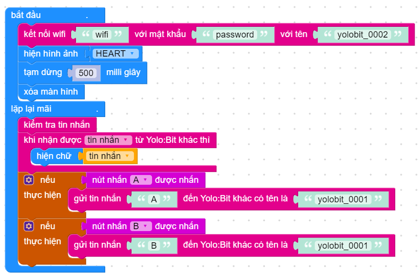

Ví dụ - Kết nối Yolo:Bit với Yolo:Bit qua Wifi¶
Với kết nối WiFi sẵn có, các Yolo:Bit có thể truyền nhận thông tin cho nhau từ bất kỳ đâu thông qua kết nối WiFi và Internet. Bạn thử tưởng tượng xem 2 Yolo:Bit có thể gửi tin nhắn cho nhau dù ở cách xa nhau nửa vòng trái đất. Thật là hay phải không nào?
{kind=link}
Trước tiên, để Yolo:Bit nói chuyện được với nhau thì chúng cần phải kết nối tới WiFi để đi ra Internet. Để kết nốiYolo:Bit với WiFi, bạn cần:
Tên WiFi (ở nhà, ở trường, hoặc tên WiFi nào bạn có thể sử dụng được)
Mật khẩu WiFi
Đặt tên cho Yolo:Bit (hãy sử dụng tên để tránh bị trùng nhé!)
Lưu ý: Nếu tên của Yolo:Bit đặt bị trùng thì Yolo:Bit trùng tên có thể nhận được hết thông tin bạn truyền về Yolo:Bit của mình. Một gợi ý để chọn tên không bị trùng là có thể dùng tên bạn và 1 dãy số đặc biệt nào đó như khanhchi-38811 hay baongoc-23156.
Chương trình sau sẽ thực hiện các việc sau:
Cho Yolo:Bit kết nối WiFi với tên được đặt lần lượt là yolobit_0001 và yolobit_0002. Bạn hãy thay đổi thông tin WiFi theo WiFi mà bạn đang kết nối.
Sau khi kết nối WiFi, Yolo:Bit sẽ hiện hình mặt cười lên màn hình LED trong nửa giây để ta biết khi nào Yolo:Bit đã kết nối WiFi thành công.
Khi nút A hay B được nhấn thì Yolo:Bit này sẽ gửi chữ A hoặc B đến Yolo:Bit kia thông qua tên.
Yolo:Bit sẽ liên tục kiểm tra tin nhắn và hiện ra nội dung tin nhắn trên màn hình LED.
Chương trình của Yolo:Bit(1) với tên là yolobit_0001:
{kind=link}
Chương trình của Yolo:Bit(2) với tên là yolobit_0002:
{kind=link}
Sau khi lần lượt nạp chương trình vào cả 2 Yolo:Bit, bạn quan sát xem Yolo:Bit có kết nối WiFi thành công hay không. Nếu không thành công, bạn nên kiểm tra lại thông tin WiFi và mật khẩu đã được nhập vào chính xác hay chưa nhé.
Khi đã kết nối WiFi, nếu nút A hoặc B được nhấn thì Yolo:Bit kia sẽ nhận được và hiện lên màn hình LED mà không cần dây nối gì cả. Thật là ngầu phải không bạn. 2 Yolo:Bit hoàn toàn có thể nói chuyện với nhau với 2 mạng Wifi ở hai nơi khác nhau luôn nhé.